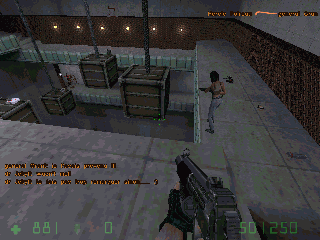

Links
Some links being quite worth a look:
Bot related topics:
- Botman's pages, author of the HPB Bot and various projects related to Half-Life
- William van der Sterren's CGF pages, with huge amount of info/links on bot AI
- Markus Klinge's POD Bot, the most acclaimed bot for Counter-Strike
- Alistair Stewart's TEAMbot, another bot for Counter-Strike
- Johannes Lampel's JoeBot, a partially neural network based AI for Counter-Strike
- Unreal based Gamebots, students using the Unreal environment for AI research
- The Nuclearbox forums, various discussions (and a good amount of noise) about bots
Opposing Force: a bot fighting over a gap

Tactical AI related topics: (mostly taken from William's CGF-AI link database)
- Terrain Analysis for Realtime Strategy Games, Dave Pottinger, 2000
- The Basics of Team AI, C. Gibson, J. O'Brien, Red Storm Entertainment, 2001
- How qualitative spatial reasoning can improve strategy game AIs, F, M, D, 2001
- The Use of Artificial Intelligence in the Computer Game Industry, Lars Lidén, 2001
- Terrain Reasoning for 3D Action Games, William van der Sterren, 2001
- AI for Tactical Grenade Handling, William van der Sterren, 2000
- It knows what you're going to do: Adding anticipation to a Quakebot, J.E. Laird, 2000
- The Quake III Arena Bot, J. P. van Waveren, Delft University of Technology, 2001
- Game Design, Game AI, and, sadly, reality, Doug Church, 2001
Miscellaneous topics:
- The OpenBSD project home page
- The anybrowser.org pages, against the segregation by the browser on the Internet
- This site explaining very well the Open Content philosophy
- Indispensable Google, best info-seeker of the Internet
Carabine Colt M4A1